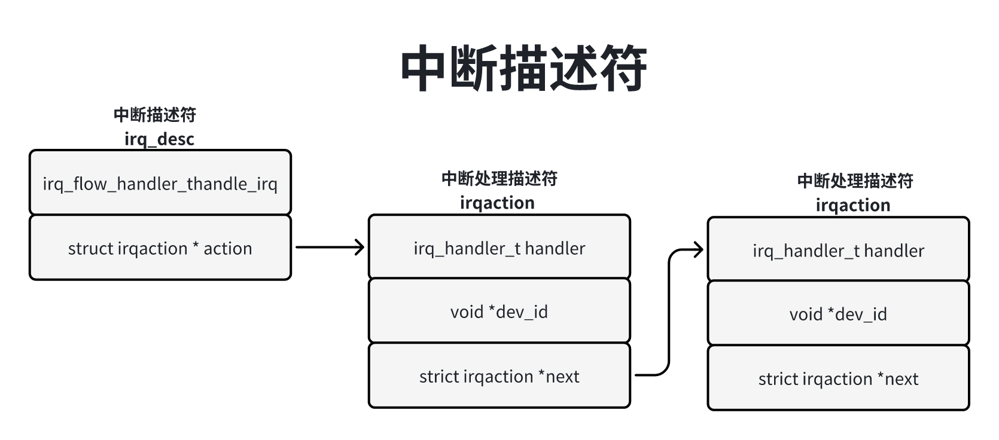
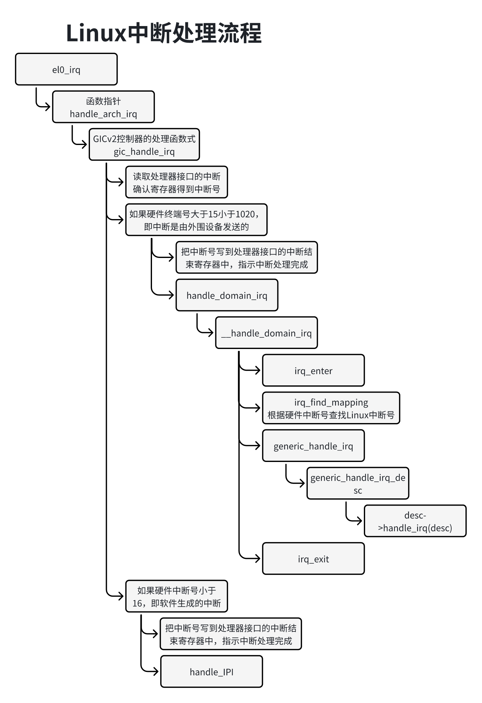
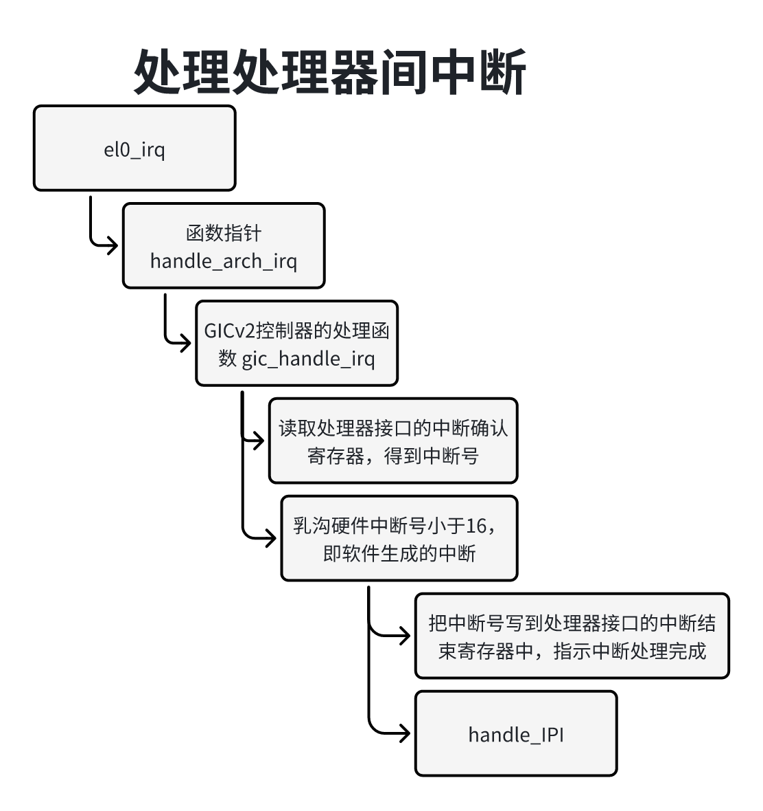

中断是外围涉笔通知处理器的一种机制，典型的例子是：网卡从网络收到报文，把保存放到接收环，然后发送中断请求通知处理器，急着处理器响应中断请求，执行中断程序，从网卡的接收环取走报文；网卡驱动程序发送报文的时候，把报文放到网卡的发送环，当网卡从发送环发送的时候，发送中断请求通知处理器发送完成。
外围设备不是把中断请求直接发给处理器，而是发给中断控制器，由中断控制器转发给处理器。ARM公司提供了一种标准的中断控制器，称为通用中断控制器（Generic Interrupt Controller GIC）目前GIC架构规范由4个版本，v1~v4。GIC v2最多支持8个处理器，GICv3最多支持128个处理器，GICv3和GICv4只支持ARM64处理器。
GIC硬件的视线形态有两种：
1）厂商研发自己的ARM处理器，向ARM公司购买GIC的授权，ARM公司提供的GIC型号有GIC-400、GIC-500和GIV-600。GIC-400遵循GICv2规范，GIC-500和GIC-600遵循GICv3规范。
2）厂商直接理想ARM公司购买处理器的授权，这些处理器包含了GIC。
从软件的绝度看，GICv2控制的两个注意好的功能块：
1）分布器（Distributror）：系统中所有的中断源链接到分布器，分布器的寄存器用来控制单个中断的属性：优先级、状态、安全、转发信息（可以被发送到哪些处理器）和是能状态。分布器决定哪个中断应该通过处理器结构转发到哪个处理器。
2）处理器结构（CPU interface）：处理器通过处理器接口连接中断。处理器接口提供的寄存器用来屏蔽和识别终端，控制终端的状态。每个处理器有一个独立的处理器接口。
软件通过中断号识别中断，每个中断号唯一对应一个中断源。
中断有以下4种类型：
1）软件生成的中断（Software Generated Interrupt, SGI）：中断号0~15，通常来实现处理器间中断（Inter-Processor Interrput IPT）。这种中断是由软件写分发器的软件生成终端寄存器（GICD_SGIR）生成的。
2）私有外设终端（Private Peripheral Interrupt PPI）：中断号16~31。处理器私有的中断源，不同处理器的相同中断源没有关系，比如每个处理器的定时器。
3）共享外设终端（Share Peripheral Interrupt, SPI）：中断号32~1020。这种中断可以被中断控制器转发到多个处理器。
4）局部特定外设终端（Locality-specific Peripheral InterruptLPI）：就有消息的中断。GICv1和GICv2不支持LPI。
中断可以是边沿触发（edge-triggered），也可以是电平触发（level-triggered）。边沿触发是电平的一瞬间触发，电压由高到低变化触发的中断称为下降沿触发，电压由低到高变化触发的中断称为上升沿触发。电平触发是在高电压或低电压保持的时间内触发，低电压触发的中断称为低电平触发，高电压触发的中断称为高电平触发。
中断有以下4种状态：
1）Inactive：中断源没有发送中断。
2）Pending：中断源已经发送中断，等待处理器处理。
3）Active：处理器已经确认中断，正在处理。
4）Active and Pending：处理器正在处理中断，相同的中断源又发送了一个中断。
中断的状态转换过程如下：
1）Inactice -> Pending：外围设备发送了中断。
2）Pending -> Actice：处理器确认了中断。
3）Actice -> Inactive：处理器处理完中断。
处理器可以通过终端控制器的寄存器访问中断控制器。中断控制器的寄存器和物理内存使用统一的物理地址空间，把寄存器的物理地址映射到内核的虚拟地址空间，可以像访问内存一样访问寄存器，所有处理器可以访问公共的分发器，但是=每个处理器使用相同的地址只能访问自己私有的处理器接口。 外围设备把中断发送给处理器，如果中断的状态是inactive，那么切换到pending；如果中断的状态已经是active，那么切换到active and pending。
分发器取出中断，执行中断处理器程序，中断处理器程序读取处理器接口的中断确认寄存器（Interrupt Acknowledge Register），得到中断号，读取操作导致分发器里面的中断状态切换到active。终端处理器程序根据中断号可以知道中断是由哪个设备发出的，从而调用该设备的处理程序。
中断处理程序执行完的时候，把中断号写到处理器接口的中断结束寄存器（End of Interrupt Register）中，指示终端处理完成，分发器里面的中断状态从active 到inactive，或者从active and pending切换到pending。
不同种类的中断控制器的访问方法存在差异，为了屏蔽差异，内核定义了中断控制器描述符irq_chip，每种中断控制器自定义各种操作函数。GICv2控制器的描述符如下：
x1// 位置：drivers/irqchip/irq-gic.c2
3static struct irq_chip gic_chip = {4 .irq_mask = gic_mask_irq,5 .irq_unmask = gic_unmask_irq,6 .irq_eoi = gic_eoi_irq,7 .irq_set_type = gic_set_type,8 .irq_get_irqchip_state = gic_irq_get_irqchip_state,9 .irq_set_irqchip_state = gic_irq_set_irqchip_state,10 .flags = IRQCHIP_SET_TYPE_MASKED | 11 IRQCHIP_SKIP_SET_WAKE | 12 IRQCHIP_MASK_ON_SUSPEND,13};一个大型系统可能由多个中断控制器，这些中断控制器可以级联，一个中断控制器作为中断源链接到另一个中断控制器，但只有已给中断控制器作为根控制器直接连接到处理器。为了把每个中断控制器本地的硬件中断号映射到全局唯一的Linux中断号（也称为虚拟中断号），内核定义了中断域irq_domian，每个中断控制器有自己的中断域。
中断控制器的驱动程序使用分配函数irq_domian_add_*()创建和注册中断域。每种映射方法提供不同的分配函数，调用者必须给分配函数提供irq_domian_ops结构体，分配函数在执行成功的时候返回irq_domian的指针。
中断域支持以下映射方法：
线性映射（linear map）：线性映射维护一个固定大小的表，索引是硬中断号。如果硬件中断号的最大数量是固定的，并且比较小（小于256），那么线性映射是好的选择。对于线性映射，分配中断域的函数如下：
61static inline struct irq_domain *irq_domain_add_linear(struct device_node *of_node,2 unsigned int size, const struct irq_domian_ops *ops, 3 void *host_deta)4{5 return __irq_domain_add(of_node_fwnode(of_node), size, size, 0, ops, host_data);6}树映射（tree map）：树映射使用基数树（radix tree）保存硬件中断号到Linux中断号的映射。如果硬件中断号可能非常大，那么树映射是最好的选择，因为不需要根据最大硬件中断号分配一个很大的表，对于树映射，分配中断域的函数如下：
51static inline struct irq_domain *irq_domian_add_tree(struct device_node *of_node, 2 const struct irq_domain_ops *ops, void *host_data)3{4 return __irq_domain_add(of_node_to_fwnode(of_node), 0, ~0, 0, oops, host_data);5}不映射（no map）：有些中断控制器很强，硬件中断号是可以配置的，例如PowerPC架构使用MPIC（Multi-Processor Interrupt Controller）。我们直接把Linux终端号写到硬件，硬件中断号就是Linux中断号，不需要映射，对于不映射，分配中断域的函数如下：
61static inline struct irq_domain *irq_domain_add_nomap(struct device_node *of_node,2 unsigned int max_irq, const struct irq_domain_ops *ops,3 void *host_data)4{5 return __irq_domain_add(of_node_to_fwnode(of_node), 0, max_irq, max_irq, ops, host_data);6}分配函数把主要工作委托给函数__irq_domain_add()。函数__irq_domian_add()的执行过程是：分配一个irq_domain结构体，初始化成员，然后把中断域添加到全局链表irq_domain_list中。
创建中断域以后，需要项中断域添加硬件中断号到Linux中断号的映射，内核提供了函数irq_create_mapping：
11unsigned int irq_find_mapping(struct irq_domain *domian, irq_hw_number_t hwirq);输入参数是中断域和硬件中断号，返回Linux中断号。该函数首先分配Linux中断号，然后把永健中断号映射提那家到中断域。
中断处理程序需要根据硬件中断号查找Linux终端号，内核提供了函数irq_find_mapping：
11unsigned int irq_find_mapping(struct irq_domain *domain, irq_hw_number_t hwirq);输入参数是中断域和硬件中断号，返回Linux中断号。
ARM64架构使用扁平设备树（Flaattened Device Tree FDT）描述办卡的硬件西悉尼，好处是可以板卡特定的代码从内核中删除，编译生成通用的板卡无关的内核。驱动开发者首先编写设备树源文件（Device Tree Source DTS），存放在目录”arch/arm64/boot/dts“下，然后使用设备树编译器（Device Tree Compilzer DTC）把设备树源文件转换成设备树二进制文件（Device Tree Blob DTB）最后把设备树二进制文件写到存储设备上。设备启动时，引导程序把设备树二进制文件从存储设备读到都内存中，引导内核的时候把设备树二进制文件的起始地址传给内核，内核解析设备树二进制文件，得到硬件信息。
设备树源文件时文本文件，扩展名是”.dts“，需要在设备树源文件中描述中断的相关信息。
1）中断控制器的信息。
2）对于作为中断源的外围设备，需要小数设备连接到哪个中断控制器，使用哪个硬件中断号。
以文件”“为例说明：
361// 位置：arch/arm64/boot/dts/arm/foundation-v8.dts2
3/ {4 model = "Foundation-v8A";5 compatible = "arm,foundation-aarch64", "arm,vexpress";6 interrupt-parent = <&gic>;7 8 9
10....11
12 timer {13 compatible = "arm,armv8-timer";14 interrupts = <1 13 0xf08>,15 <1 14 0xf08>,16 <1 11 0xf08>,17 <1 10 0xf08>;18 clock-frequency = <100000000>;19 };20 ....21};22
23/ {24 gic: interrupt-controller@2c001000 {25 compatible = "arm,cortex-a15-gic", "arm,cortex-a9-gic";26 27 28 interrupt-controller;29 reg = <0x0 0x2c001000 0 0x1000>,30 <0x0 0x2c002000 0 0x2000>,31 <0x0 0x2c004000 0 0x2000>,32 <0x0 0x2c006000 0 0x2000>;33 interrupts = <1 9 0xf04>;34 };35};36
节点”Interrupt-controller@2c0010000“描述中断控制器的信息，”gic“是标号。
1）属性”compatible“：值是字符串列表，用来匹配驱动程序。第一个字符串指定准确的设备名称。后面的字符串指定兼容的设备名称。
2）属性”#interrupt-cells“：指定属性”interrupts“的单元数量，一个单元是一个32位整数。属性”#Interrupt-cells“的值为3，表示属性”interrupts“用3个32位整数描述。
3）属性”interrupt-controller“：表示本设备中是中断控制器。
4）属性”reg“：描述中断控制器的寄存器的物理地址范围，第一个物理地址范围是分发器的，第二个物理地址范围是处理器接口的。<0 0x2c001000 0x1000>表示起始地址是”0 0x2c001000“， 长度是”0 0x1000“。
节点”timer“描述定时器信息。
1）属性”interrupts“：包含3个单元，依次描述中断类型、硬件中断号和中断触发方式。
处理器有4个核，每个核对应一个定时器。
第1个单元是中断类型，值为1表示中断类型是私有外设终端，参考头文件“script/dtc/include-prefixes/dt-bindings/interrupt-controller/arm-gic.h”定义的宏：GIC_SPI为0，GIC_PPI为1。
第2个单元是硬件中断号，4个核的定时器分别使用硬件中断号13、14、11和10。
第3个单元是标志位组合，参考头文件”include/linux/irq.h“定义的标志位，0xf08是一下标志位的组合：
-> IRQ_TYPE_LELVEL_LOW = 0x00000008 表示第电平触发。
-> IRQ_LEVEL = (1 << 8)表示电平触发。
-> IRQ_PER_CPU = (1 << 9)表示中断是每个处理器私有的。
-> IRQ_NOPROBE = (1 << 10)表示中断不能被自动探测。
-> IRQ_NOREQUEST = (1 << 11)表示不能通过函数request_irq()请求中断。
2）属性“interrupt-parent”：描述本设备的中断请求线连接到哪个中断控制器。如果本节点没有指定属性“interrupt-parent”，那么继承父节点的属性“interrupt-parent”。
本节点“timer”的父节点是根节点，根节点的属性“interrupt-parent”的值是“<&gic>”，“gic”是节点“interrupt-controller@2c001000”的标号，意思是本设备的中断请求连接到中断控制器“interrupt-controller@2c001000”。
中断控制器可以作为中断源连接到另一个中断控制器，所以中断控制器的节点可能有属性“interrrupts”和“interrupt-parent”。
在GIVv2控制器的驱动程序中，定义了多个类型为of_device_id的静态变量，成员compatible是驱动程序的设备的名称，成员data是初始化函数，编译器把这些惊天变量放在专用的接“__irqchip_of_table”里面。这个节“__irqchip_of_table”称为中断控制器匹配白哦，里面每个表项的格式是结构体of_device_id。
71// 位置：deviers/irqchip/irq-gic.c2
3IRQCHIP_DECLARE(gic-400, "arm,gic-400", gic_of_init);4...5IRQCHIP_DECLARE(cortex_a15_gic, "arm,cortex-a15-gic", gic_of_init);6IRQCHIP_DECLARE(cortex_a9_gic, "arm,cortex-a8-gic", gic_of_init);7...把宏IRQCHIP_DECLARE展开以后是：
131static const struct of_device_id __of_table_gic_4002 __section(__irqchip_of_table)3 = {.compatible = "arm, gic-400", .data = gic_of_init};4 ...5 static const struct of_decice_id __of_table_contex_a15_gic6 __section(__irqchip_of_table)7 = {.compatble = "arm, cortext_a15_gic", 8 .data = gic_of_init };9 static const struct of_device_id __of_table_cortex_a9_gic10 __section{ __irqchip_of_table}11 = {.compatible = "arm,cortex_a9_gic", 12 .data = gic_of_init };13 ...编译ARM64架构的内核时，链接器执行下面的链接脚本，使用全局变量__irqchip_of_table存放节”__irqchip_of_table“的起始地址，也就是中断控制器匹配表的其实地址。
151// 位置：arch/arm64/kernel/vmlinux.lds.S2
3...4__initdata_begin = .;5.init.data : {6 INIT_DATA7 ...8}9...10 11// 位置：include/asm-generic/vmlinux.lds.h12 ...14 IRQCHIP_OF_MATCH_TABLE()15 ...把IRQCHIP+OF_MATCH_TABLE()展开以后是：
41. = ALLGN(8);2__irqchip_of_table = .;3KEEP(*(__irqchip_of_table))4KEEP(*(__irqchip_of_table_end))在内核初始化的时候，匹配设备树文件的中断控制器属性”compatible“和内核的中断控制器匹配表，找到何时的中断控制器的驱动程序，执行驱动程序的初始化函数。函数irqchip_init把主要工作委托给函数of_irq_init，传入中断控制器匹配表的其实地址__irqchip_of_table。
81// 调用链路：start_kernel() -> init_IRQ() -> irqchip_init()2// 位置：deivers/irqchip/irqchip.c3
4void __init irqchip_init(void)5{6 of_irq_init(__irqchip_of_table);7 ...8}911// 位置：dever/of/irq.c2
3void __init of_irq_init(const struct of_device_id *matches)4{5 const struct of_device_id *match;6 struct device_node *np, *parent = NULL;7 struct of_intc_desc *desc, *temp_desc;8 struct list_head intc_desc_list, intc_parent_list;9
10 INIT_LIST_HEAD(&intc_desc_list);11 INIT_LIST_HEAD(&intc_parent_list);12
13 // 遍历设备树文件的设备节点。如果属性“compatible”和中断控制器匹配表中的任何一条表项字段14 // “compatible”pipei，处理如下：15 for_each_matching_node_and_match(np, matches, &match) {16 // 如果节点没后属性”interrupt-controller“说明设备不是中断控制器 就忽略该设备17 if (!of_find_property(np, "interrupt-controller", NULL) ||18 !of_device_is_available(np))19 continue;20
21 if (WARN(!match->data, "of_irq_init: no init function for %s\n",22 match->compatible))23 continue;24
25 // 分配一个of_intc_desc实例。成员irq_init_cb保存初始化函数：成员dev保存本设备的device_node26 // 实例；成员interrupt_parent保存父设备。多个中断控制器可以级联，终端控制器1可以作为中断源连接到27 // 中断控制器2，中断控制器2是中断控制器1 的父设备28 desc = kzalloc(sizeof(*desc), GFP_KERNEL);29 if (WARN_ON(!desc)) {30 of_node_put(np);31 goto err;32 }33
34 desc->irq_init_cb = match->data;35 desc->dev = of_node_get(np);36 desc->interrupt_parent = of_irq_find_parent(np);37 if (desc->interrupt_parent == np)38 desc->interrupt_parent = NULL;39 // 把of_intc_desc实例添加到链表intc_desc_list中40 list_add_tail(&desc->list, &intc_desc_list);41 }42
43 // 遍历链表intc_desc_list，从根设备开始，先执行辐射背的初始化函数，然后执行子设备的初始化函数44 while (!list_empty(&intc_desc_list)) {45
46 list_for_each_entry_safe(desc, temp_desc, &intc_desc_list, list) {47 int ret;48
49 if (desc->interrupt_parent != parent)50 continue;51
52 list_del(&desc->list);53
54 of_node_set_flag(desc->dev, OF_POPULATED);55
56 pr_debug("of_irq_init: init %s (%p), parent %p\n",57 desc->dev->full_name,58 desc->dev, desc->interrupt_parent);59 ret = desc->irq_init_cb(desc->dev,60 desc->interrupt_parent);61 if (ret) {62 of_node_clear_flag(desc->dev, OF_POPULATED);63 kfree(desc);64 continue;65 }66
67 list_add_tail(&desc->list, &intc_parent_list);68 }69
70 desc = list_first_entry_or_null(&intc_parent_list,71 typeof(*desc), list);72 if (!desc) {73 pr_err("of_irq_init: children remain, but no parents\n");74 break;75 }76 list_del(&desc->list);77 parent = desc->dev;78 kfree(desc);79 }80
81 list_for_each_entry_safe(desc, temp_desc, &intc_parent_list, list) {82 list_del(&desc->list);83 kfree(desc);84 }85err:86 list_for_each_entry_safe(desc, temp_desc, &intc_desc_list, list) {87 list_del(&desc->list);88 of_node_put(desc->dev);89 kfree(desc);90 }91}设备树文件”arch/arm64/boot/dts/arm/foundation-v8.dts“里面中断控制器的属性”compatible“是：
11"arm, cortex-a15-gic", "arm, cortex-a9-gic"和中断控制器匹配标志宏的“{.compatible = "arm,cortex_a15_gic",.data=gic_of_init}”或“{.compatible = "arm,cirtext_a9_gic", .data=gic_of_init}”匹配。
GICv2控制器的初始化函数gic_of_init的代码如下：
521// 位置：devers/irqchip/irq-gic.c2
3// 参数node是本中断控制器，参数parent是父设备，即本中断控制器作为中断源连接到中断控制器4int __init5gic_of_init(struct device_node *node, struct device_node *parent)6{7 struct gic_chip_data *gic;8 int irq, ret;9
10 if (WARN_ON(!node))11 return -ENODEV;12
13 if (WARN_ON(gic_cnt >= CONFIG_ARM_GIC_MAX_NR))14 return -EINVAL;15
16 // 从全局数组gic_data取一个空闲的元素来保存本地中断控制器的信息17 gic = &gic_data[gic_cnt];18
19 // 从设备树文件读取中断控制器的属性”reg“获取分发器和处理器的寄存器的物理地址范围，把物理地址范围映射到虚拟地址空间20 ret = gic_of_setup(gic, node);21 if (ret)22 return ret;23
24 if (gic_cnt == 0 && !gic_check_eoimode(node, &gic->raw_cpu_base))25 static_key_slow_dec(&supports_deactivate);26
27 // 调用函数__gic_init_bases初始化结构体gic_chip_data28 ret = __gic_init_bases(gic, -1, &node->fwnode);29 if (ret) {30 gic_teardown(gic);31 return ret;32 }33
34 if (!gic_cnt) {35 gic_init_physaddr(node);36 gic_of_setup_kvm_info(node);37 }38
39 // 如果本中断控制器由父设备，即作为中断源连接到其他中断控制器。40 if (parent) {41 // 从设备文件中本设备节点的属性”interrupts“获取硬件中断号，把硬件中断号映射到Linux中断号n42 irq = irq_of_parse_and_map(node, 0);43 // 把Linux中断号n的中断描述符的尘缘handle_irq()设置为函数gic_handle_cascade_irq()44 gic_cascade_irq(gic_cnt, irq);45 }46
47 if (IS_ENABLED(CONFIG_ARM_GIC_V2M))48 gicv2m_init(&node->fwnode, gic_data[gic_cnt].domain);49
50 gic_cnt++;51 return 0;52}函数__gic_init_bases代码如下：
471// 位置：drivers/irqchip/irq-gic.c2
3static int __init __gic_init_bases(struct gic_chip_data *gic,4 int irq_start,5 struct fwnode_handle *handle)6{7 char *name;8 int i, ret;9
10 if (WARN_ON(!gic || gic->domain))11 return -EINVAL;12
13 // 如果本中断控制器是根控制器（最先初始化根处控制器，所以在数组gic_data重点额索引是0）14 if (gic == &gic_data[0]) {15 16 for (i = 0; i < NR_GIC_CPU_IF; i++)17 gic_cpu_map[i] = 0xff;18 // 把全局阿哈湖指针__smp_cross_call设置为函数gic_rais_sotirq，用来发送软件生成的中断，即一个处理器项其他处理器发送中断20 set_smp_cross_call(gic_raise_softirq);21 cpuhp_setup_state_nocalls(CPUHP_AP_IRQ_GIC_STARTING,23 "irqchip/arm/gic:starting",24 gic_starting_cpu, NULL);25 // 把全局函数指针handle_arch_irq设置为函数gic_handle_irq，该函数是中断处理器程序C语言部分入口26 set_handle_irq(gic_handle_irq);27 if (static_key_true(&supports_deactivate))28 pr_info("GIC: Using split EOI/Deactivate mode\n");29 }30
31 // 调用函数gic_init_chip以初始化中断控制器描述符irq_chip32 if (static_key_true(&supports_deactivate) && gic == &gic_data[0]) {33 name = kasprintf(GFP_KERNEL, "GICv2");34 gic_init_chip(gic, NULL, name, true);35 } else {36 name = kasprintf(GFP_KERNEL, "GIC-%d", (int)(gic-&gic_data[0]));37 gic_init_chip(gic, NULL, name, false);38 }39
40 // 调用函数gic_init_bases进行初始化：为本中断控制器分配中断域，初始化中断控制器的分支器41 // 的各种寄存器，初始化中断控制器的处理器接口的各种寄存器42 ret = gic_init_bases(gic, irq_start, handle);43 if (ret)44 kfree(name);45
46 return ret;47}对于中断控制器的每个中断源，向中断添加硬件中断号到Linux'中断号的映射时，内核分配一个Linux终端号和一个中断描述符irq_desc，如下图所示，中断米OA舒服度记录的内存由两个层次的中断处理函数。
1）第一层处理函数是中断描述符的成员handle_irq()。
2）第二层处理函数是设备驱动程序注册的处理函数。中断描述符有一个中断处理链表（irq_desc.action），每个中断处理描述符（irq_action）保存设备驱动程序的注册的处理函数。因为多个设备可以共享一个硬件中断号，所以中断处理链表可能挂载多个中断处理描述符。

怎么存储linux中断号到中断描述符的映射关系？有两种实现方式：
1）如果中断编号是稀疏的（不连续），那么使用基数树（radix tree）存储。需要开启配置宏CONFIG_SPARSE_IRQ。
2）如果中断编号是连续的，那么使用数组存储。
151// 位置：kernel/irq/irqdesc.c2
3static RADIX_TREE(irq_desc_tree, GDP_KERNEL);5
6struct irq_desc irq_desc[NR_IRQS] __cacheline_aligned_in_smp = {8 [0 ... NR_IRQS - 1] = {9 .handle_irq = {10 .depth = 1, 11 .lock = __RAW_SPIN_LOCK_UNLOCKED(irq_desc -> lock),12 }13 }14};15ARM64架构默认开启配置宏CONFIG_SPARSE_IRQ，使用基数树存储。
把硬件中断号映射到Linux中断号的时候，根据硬件中断的类型设置中断描述符的成员handle_irq()，以GIC v2控制器为例，函数gic_irq_domain_map所做的处理如下所示：
1）如果硬件中断号小于32，说明是软件生成的额终端或私有外设终端，那么把中断描述符的成员handle_irq()设置为函数handle_percpu_devid_irq。
2）如果硬件中断号大于等于32，说明是共享外设中断，那么把中断描述符的成员handle_irq()设置为handle_fasteoi_irq。
211：// 调用链路：irq_create_mapping() -> irq_domain_associate() -> domian -> ops -> 2// -> map() -> gic_irq_domian_map()3
4// 位置：drivers/irqchip/irq-gic.c5static int gic_irq_domain_map(struct irq_domain *d, unsigned int irq,6 irq_hw_number_t hw)7{8 struct gic_chip_data *gic = d->host_data;9
10 if (hw < 32) {11 irq_set_percpu_devid(irq);12 irq_domain_set_info(d, irq, hw, &gic->chip, d->host_data,13 handle_percpu_devid_irq, NULL, NULL);14 irq_set_status_flags(irq, IRQ_NOAUTOEN);15 } else {16 irq_domain_set_info(d, irq, hw, &gic->chip, d->host_data,17 handle_fasteoi_irq, NULL, NULL);18 irq_set_probe(irq);19 }20 return 0;21}设备驱动程序可以使用函数request_irq()注册中断处理函数：
21int request_irq(unsigned int irq, irq_handler_t handler, unsigned long flags, 2 const char *name, void *dev);参数说明：
irq：Linux中断号。
handler：处理函数
flags：标志位，可以是0或者以下标志组合。
IRQF_SHARED：允许多个设备共享同一个中断号。
__IRQF_TIMER：定时器中断。
IRQF_PERCPU：终端是每个处理器私有的。
IRQF_NOBALANCING：不允许该终端在处理器之间负载均衡。
IRQF_NO_THREAD：红缎不能线程化。
name：设备名称。
dev：传给处理函数，由handler指定的参数。
在ARM64架构下，在异常级别1的异常向量表中，中断的入口有3个：
1）如果处理器处在内核模式（异常级别1）中断的入口是el1_irq。
2）如果处理器正在用户模式（异常级别0）下执行64位应用程序，中断的入口是el0_irq。
3）如果处理器正在用户模式（遗产级别0）下执行32位应用程序，中断的入口是el0_irq-compat。
假设处理器正在用户模式（异常级别0）下执行64位应用程序，中断控制器是GICv2控制器，Linux中断处理流程如下图所示：

读取处理器接口的中断确认寄存器得到中断号，分发器里面的中断状态切换到active。
如果硬件中断号大于15小于1020，即中断是由外围设备发送的，处理如下：
把中断号写到处理器接口的中断结束寄存器中，指示中断处理完成，分发器里面的中断状态从active切换到inactive或者从active and pending切换到active。
调用函数irq_enter()，进入中断上下文。
调用函数irq_find_mapping()根据硬件中断号查找Linux中断号。
调用中断描述符的成员handle_irq()。
调用函数irq_exit)，退出中断上下文。
如果硬件中断号小于16，即中断是由软件生成的，处理如下：
把中断号写到处理器接口的中断结束寄存器中，指示中断处理完成。
调用函数handle_IPI()进行处理。
函数el0_irq()代码如下：
281// 位置：arch/arm64/kernel/entry.S2
3.align 64el0_irq:5 // 把进程的寄存器值保存到内核栈6 kernel_entry 07 el0_irq_naked:8 // 开启调试异常9 enable_dbg10 ...11 // irq_handler是一个宏12 irq-handler13 ...14 // 使用内核栈保存寄存器值回复进程的寄存器，返回用户模式15 b ret_to_user16 ENDPROC(el0_irq)17 18 .macro irq_handler19 ldr_1 x1, handle_arch_irq20 mov x0, sp21 // 从进程的内核切换到中断栈，每个处理器有一个专用的中断栈22 irq_stack_entry23 // 调用函数指针handle_arch_irq指向的函数。中断控制器在内核初始化的时候设置函数24 // 指针handle_arch_irq，GICv2控制器把该内核指针设置为函数gic_handle_irq25 blr x126 // 从中断栈切换到进程的内核栈27 irq_stack_exit28 .endm21// 从进程的内核栈切换到中断栈，每个处理器有一个专用的中断栈2DEFINE_PER_CPU(unsigned long [IRQ_STACK_SIZE/sizeof(long)], irq_stack)__aligned(16);GIVv2控制器的函数gic_handle_irq的代码如下：
311// 位置：drivers/irqchip/irq-gic.c2
3static void __exception_irq_entry gic_handle_irq(struct pt_regs *regs)4{5 u32 irqstat, irqnr;6 struct gic_chip_data *gic = &gic_data[0];7 void __iomem *cpu_base = gic_data_cpu_base(gic);8
9 do {10 irqstat = readl_relaxed(cpu_base + GIC_CPU_INTACK);11 irqnr = irqstat & GICC_IAR_INT_ID_MASK;12
13 if (likely(irqnr > 15 && irqnr < 1020)) {14 if (static_key_true(&supports_deactivate))15 writel_relaxed(irqstat, cpu_base + GIC_CPU_EOI);16 handle_domain_irq(gic->domain, irqnr, regs);17 continue;18 }19 if (irqnr < 16) {20 writel_relaxed(irqstat, cpu_base + GIC_CPU_EOI);21 if (static_key_true(&supports_deactivate))22 writel_relaxed(irqstat, cpu_base + GIC_CPU_DEACTIVATE);23 smp_rmb();25 handle_IPI(irqnr, regs);26 continue;28 }29 break;30 } while (1);31}如果是私有外设中断，那么中断描述符的成员handle_irq()是函数handle_precpu_devidirq，代码如下：
321// 位置：kernel/irq/chip.c2
3void handle_percpu_devid_irq(struct irq_desc *desc)4{5 struct irq_chip *chip = irq_desc_get_chip(desc);6 struct irqaction *action = desc->action;7 unsigned int irq = irq_desc_get_irq(desc);8 irqreturn_t res;9
10 kstat_incr_irqs_this_cpu(desc);11
12 if (chip->irq_ack)13 chip->irq_ack(&desc->irq_data);14
15 if (likely(action)) {16 trace_irq_handler_entry(irq, action);17 res = action->handler(irq, raw_cpu_ptr(action->percpu_dev_id));18 trace_irq_handler_exit(irq, action, res);19 } else {20 unsigned int cpu = smp_processor_id();21 bool enabled = cpumask_test_cpu(cpu, desc->percpu_enabled);22
23 if (enabled)24 irq_percpu_disable(desc, cpu);25
26 pr_err_once("Spurious%s percpu IRQ%u on CPU%u\n",27 enabled ? " and unmasked" : "", irq, cpu);28 }29
30 if (chip->irq_eoi)31 chip->irq_eoi(&desc->irq_data);32}如果是共享外设终端，那么中断描述符成员handle_irq()势函数handle_fasteoi_irq，代码如下：
351// 位置：kernel/irq/chip.c2
3void handle_fasteoi_irq(struct irq_desc *desc)4{5 struct irq_chip *chip = desc->irq_data.chip;6
7 raw_spin_lock(&desc->lock);8
9 if (!irq_may_run(desc))10 goto out;11
12 desc->istate &= ~(IRQS_REPLAY | IRQS_WAITING);13
14 if (unlikely(!desc->action || irqd_irq_disabled(&desc->irq_data))) {15 desc->istate |= IRQS_PENDING;16 mask_irq(desc);17 goto out;18 }19
20 kstat_incr_irqs_this_cpu(desc);21 if (desc->istate & IRQS_ONESHOT)22 mask_irq(desc);23
24 preflow_handler(desc);25 handle_irq_event(desc);26
27 cond_unmask_eoi_irq(desc, chip);28
29 raw_spin_unlock(&desc->lock);30 return;31out:32 if (!(chip->flags & IRQCHIP_EOI_IF_HANDLED))33 chip->irq_eoi(&desc->irq_data);34 raw_spin_unlock(&desc->lock);35}调用函数handle_irq_event，执行设备驱动程序注册的处理函数。
函数handle_irq_event把主要工作委托给函数handle_irq_even_percpu。函数handle_irq_event_percpu遍历中断描述符的中断处理器链表，执行每个中断处理描述符的处理函数，代码如下：
471// 调用链路：handle_irq_event() -> handle_irq_event_percpu() -> __handle_irq_event_percpu()2// 位置：kernel/irq/handle.c3
4irqreturn_t __handle_irq_event_percpu(struct irq_desc *desc, unsigned int *flags)5{6 irqreturn_t retval = IRQ_NONE;7 unsigned int irq = desc->irq_data.irq;8 struct irqaction *action;9
10 for_each_action_of_desc(desc, action) {11 irqreturn_t res;12
13 trace_irq_handler_entry(irq, action);14 res = action->handler(irq, action->dev_id);15 trace_irq_handler_exit(irq, action, res);16
17 if (WARN_ONCE(!irqs_disabled(),"irq %u handler %pF enabled interrupts\n",18 irq, action->handler))19 local_irq_disable();20
21 switch (res) {22 case IRQ_WAKE_THREAD:23 /*24 * Catch drivers which return WAKE_THREAD but25 * did not set up a thread function26 */27 if (unlikely(!action->thread_fn)) {28 warn_no_thread(irq, action);29 break;30 }31
32 __irq_wake_thread(desc, action);33
34 /* Fall through to add to randomness */35 case IRQ_HANDLED:36 *flags |= action->flags;37 break;38
39 default:40 break;41 }42
43 retval |= res;44 }45
46 return retval;47}中断线程化就是使用内核线程处理中断，目的是减少系统关中断的时间，增强系统的实时性。内核提供的函数request_threaded_irq()用来注册现成话的中断：
31int request_threaded_irq(unsigned int riq, irq_handler_t handler,2 irq_handler_t thread_fn, unsigned long flags,3 const char *name, void *dev);参数thread_fn是线程处理函数。
少数中断不能线程化，典型的例子是时钟中断，有些流氓进程不主动让出处理器，内核只能依靠中期行的时钟夺回处理器的控制权，时钟中断是调度器的脉搏。对于不能线程化的中断，注册处理函数的时候必修设置标志IRQF_NO_THREAD。
如果开启了强制中断线程化的配置宏CONFIG_IRQ_FORCED_THREADING，并且在引导内核的时候指定内核参数“threadirqs”那么强制除了标记IRQF_NO_THREAD以外的所有中断线程化。ARM64架构默认开启了配置宏CONFIG_IRQ_FORCED_THREADING。
每个中断处理描述符（irqaction）对应一个内核线程，成员thread指向内核线程的进程描述符，成员thread_fn指向线程处理函数，代码如下：
91// 位置：include/linux/interrupt.h2
3
4struct irqaction{5 ...6 irq_handler_t thread_fn;7 struct task_struct *thread;8 ... 9} __cacheline_internodealingned_in_smp;可以看到，中断处理器线程的优先级是50、调度策略是SCHED_FIFO的实时内核线程，名称是”irq/“侯建跟着Linux中断号，现成处理函数是irq_thread()。
311// 调用链路： request_threaded_irq() -> __setup_irq() -> setup_irq_thread()2// 位置：kernel/irq/manage.c3
4static int5setup_irq_thread(struct irqaction *new, unsigned int irq, bool secondary)6{7 struct task_struct *t;8 struct sched_param param = {9 .sched_priority = MAX_USER_RT_PRIO/2,10 };11
12 if (!secondary) {13 t = kthread_create(irq_thread, new, "irq/%d-%s", irq,14 new->name);15 } else {16 t = kthread_create(irq_thread, new, "irq/%d-s-%s", irq,17 new->name);18 param.sched_priority -= 1;19 }20
21 if (IS_ERR(t))22 return PTR_ERR(t);23
24 sched_setscheduler_nocheck(t, SCHED_FIFO, ¶m);25
26 get_task_struct(t);27 new->thread = t;28
29 set_bit(IRQTF_AFFINITY, &new->thread_flags);30 return 0;31}在终端处理程序中，函数__handle_irq_event_percpu遍历中断描述符的中断处理链表，执行每个中断处理描述符的处理函数。乳沟处理函数返回IRQ_WAKE_THREAD，说明线程化的中断，那么唤醒中断处理线程。
461// 调用链路：handle_fasteoi_irq() -> handle_irq_event() -> handle_irq_event_percpu() -> 2// __handle_irq_event_percpu()3
4// 位置：kernel/irq/handle.c5
6irqreturn_t __handle_irq_event_percpu(struct irq_desc *desc, unsigned int *flags)7{8 irqreturn_t retval = IRQ_NONE;9 unsigned int irq = desc->irq_data.irq;10 struct irqaction *action;11
12 for_each_action_of_desc(desc, action) {13 irqreturn_t res;14
15 trace_irq_handler_entry(irq, action);16 res = action->handler(irq, action->dev_id);17 trace_irq_handler_exit(irq, action, res);18
19 if (WARN_ONCE(!irqs_disabled(),"irq %u handler %pF enabled interrupts\n",20 irq, action->handler))21 local_irq_disable();22
23 switch (res) {24 // 继续往下走，把action->flags作为生成随机数的一个因子25 case IRQ_WAKE_THREAD:26 if (unlikely(!action->thread_fn)) {27 warn_no_thread(irq, action);28 break;29 }30
31 __irq_wake_thread(desc, action);32
33 case IRQ_HANDLED:34 *flags |= action->flags;35 break;36
37 default:38 break;39 }40
41 retval |= res;42 }43
44 return retval;45}46
中断处理线程的函数是irq_thread()，调用函数irq_thread_fn()，然后函数irq_thread_fn()调用注册的线程处理函数。
381// 位置：kernel/irq/manage.c2
3static int irq_thread(void *data)4{5 struct callback_head on_exit_work;6 struct irqaction *action = data;7 struct irq_desc *desc = irq_to_desc(action->irq);8 irqreturn_t (*handler_fn)(struct irq_desc *desc,9 struct irqaction *action);10
11 if (force_irqthreads && test_bit(IRQTF_FORCED_THREAD,12 &action->thread_flags))13 handler_fn = irq_forced_thread_fn;14 else15 handler_fn = irq_thread_fn;16
17 init_task_work(&on_exit_work, irq_thread_dtor);18 task_work_add(current, &on_exit_work, false);19
20 irq_thread_check_affinity(desc, action);21
22 while (!irq_wait_for_interrupt(action)) {23 irqreturn_t action_ret;24
25 irq_thread_check_affinity(desc, action);26
27 action_ret = handler_fn(desc, action);28 if (action_ret == IRQ_HANDLED)29 atomic_inc(&desc->threads_handled);30 if (action_ret == IRQ_WAKE_THREAD)31 irq_wake_secondary(desc, action);32
33 wake_threads_waitq(desc);34 }35
36 task_work_cancel(current, irq_thread_dtor);37 return 0;38}软件可以禁止中断，使处理器不响应所有中断请求，但是不可屏蔽中断（Non Maskable
Interrupt m NMI）是个例外。
禁止中断的接口如下：
1）local_irq_disable()。
2）local_irq_restore(flags)：恢复本处理器的中断状态。
local_irq_disable()和local_irq_enable()不能嵌套使用，local_irq_save(flags)可以嵌套使用。
ARM64架构禁止中断的函数local_irq_disable()如下：
121// 调用链路：local_irq_disable() -> raw_local_disable() -> arch_local_disable()2// 位置：arch/arm64/include/asm/irqflags.h3
4static inline void arch_local_irq_disable(void)5{6 asm volatile(7 "asm daifset, #2 // arch_local_irq_disable"8 :9 :10 :"memroy"11 );12}把处理器状态的中断掩码位置设置成1，从此以后处理器不会响应中断请求。
ARM64架构开启中断函数local_irq_enable()如下：
121// 调用链路：local_irq_enable() -> raw_local_enable() -> arch_local_enable()2// 位置：arch/arm64/include/asm/irqflags.h3
4static inline void arch_local_irq_enable(void)5{6 asm volatile(7 "msr daofclr, #2 // arch_local_irq_enable"8 :9 :10 :"memory"11 );12}把处理器状态的中断掩码位设置为0。
软件可以禁止某个外围设备的中断，中断控制器不会把该设备发送的中断转发给处理器。
禁止某个中断的函数是：
11void diable_irq(unsigned int irq);参数irq是Linux的中断号。
开启单个中断的函数是：
11void enable_irq(unsigned int irq);参数irq是Linux中断号。
对于ARM64架构的GIC控制器，如果需要开启硬件中断n，那么设置分发器的寄存器GICD_ISENABLERn（Interrupt Set-Enable Register）；如果需要禁止硬件中断n，那么设置分发器的寄存器GICD_ICENABLERn（Interrupt Clear-Enable Register）。
假设某个外围设备的硬件中断号是n，当这个外围设备发送中断给分发器的时候，只有在分发器上开启了硬件中断n，分发器才会把硬件中断n转发给处理器。
在多处理器系统中，管理员可以设置中断亲和性，允许中断控制器把某个中断转发给哪些处理器，有两种配置方法：
1）写文件”/proc/irq/IRQ#smp_affinity“，参数是位掩码。
2）写文件”/proc/irq/IRQ#smp_affinity_list“，参数是处理器列表。
例如，管理源想要配置允许中断控制器把LInux中断号为32的中断转发给处理器0~3，配置方法有两种：
1）echo of > /proc/irq/32/smp_affinity
2）echo 0~3 > /proc/irq/32/smp_affinity_list
配置完成以后，可以连续执行命令“cat /proc/interrupts\grep 'CPU|32:'”，观察是否只有处理器0~3收到了Linnux中断号为32的中断。
内核提供了设置中断亲和性的函数：
11int irq_set_affinity(unsigned int irq, const struct cpumask *cpumask);参数irq是Linux中断号，参数cpumask是处理器位掩码。
对于ARM64架构的GIC控制器，可以设置分发器的寄存器GICD_ITARGETSRn（中断目标寄存器， Interrupt Targets Register）允许把硬件中断n煮饭到哪些处理器，硬件中断n必须是共享外设中断。
处理器间中断（Inter-Processor Interrupt， IPI）是一种特殊的中断，在多处理器系统中，一个处理器可以向其他处理器发送中断，要求目标处理器指向某件事情。
常见的使用处理器的中断的函数如下：
1）在所有其他处理器以上执行一个函数：
11int smp_call_function(smp_call_func_t func, void *info, int wait);参数func是要执行的函数，目标处理器在中断处理程序中执行该函数；参数info是传给函数func的参数，参数wait是否需要等待目标处理器执行完函数。
2）在指定的处理器上执行一个函数。
11int smp_call_function_single(int cpu, smp_func_t func, void *info, int wait );3）要求指定的处理器重新调度进程。
11void smp_send_reschedult(int cpu);对于ARM64结构的GIC控制器，把处理器中断称为软件生成的中断，可以写分发器的寄存器GICD_SGIR（软件生成中断寄存器 Software Generated Interrupt Register）以生成处理器间中断。
假设处理器正在用户模式（异常级别0）下执行64位应用程序，中断控制器是GICv2控制器，处理器处理器中断的执行流程如下图所示：

函数handle_IPI负责处理处理器间中断，参数ipinr是硬件中断号，代码如下：
721// 位置：arch/arm64/kernel/smp.c2
3
4void handle_IPI(int ipinr, struct pt_regs *regs)5{6 unsigned int cpu = smp_processor_id();7 struct pt_regs *old_regs = set_irq_regs(regs);8
9 if ((unsigned)ipinr < NR_IPI) {10 trace_ipi_entry_rcuidle(ipi_types[ipinr]);11 __inc_irq_stat(cpu, ipi_irqs[ipinr]);12 }13
14 switch (ipinr) {15 case IPI_RESCHEDULE:16 scheduler_ipi();17 break;18
19 case IPI_CALL_FUNC:20 irq_enter();21 generic_smp_call_function_interrupt();22 irq_exit();23 break;24
25 case IPI_CPU_STOP:26 irq_enter();27 ipi_cpu_stop(cpu);28 irq_exit();29 break;30
31 case IPI_CPU_CRASH_STOP:32 if (IS_ENABLED(CONFIG_KEXEC_CORE)) {33 irq_enter();34 ipi_cpu_crash_stop(cpu, regs);35
36 unreachable();37 }38 break;39
40 case IPI_TIMER:42 irq_enter();43 tick_receive_broadcast();44 irq_exit();45 break;46
48 case IPI_IRQ_WORK:50 irq_enter();51 irq_work_run();52 irq_exit();53 break;54
56 case IPI_WAKEUP:58 WARN_ONCE(!acpi_parking_protocol_valid(cpu),59 "CPU%u: Wake-up IPI outside the ACPI parking protocol\n",60 cpu);61 break;62
64 default:65 pr_crit("CPU%u: Unknown IPI message 0x%x\n", cpu, ipinr);66 break;67 }68
69 if ((unsigned)ipinr < NR_IPI)70 trace_ipi_exit_rcuidle(ipi_types[ipinr]);71 set_irq_regs(old_regs);72}目前支持7种处理器间中断：
IPI_RESCHEDULE：硬件中断号是0，重新调度进程，函数smp_send_reschedule()生成中断。
IPI_CALL_FUNC：硬件中断号是1，执行函数，函数smp_call_function()生成中断。
IPI_CPU_STOP：硬件中断号是2，使处理器停止，函数smp_send_crash_stop()生成的中断。
IPI_CPU_CRASH_STOP：硬件中断号是3，使处理器停止，函数smp_send_crash_stop()生成的中断。
IPI_TIMER：硬件中断号是4，广播的时钟事件，函数tick_broadcast()生成的中断。
IPI_IRQ_WORK：硬件中断号是5，在硬终端上下文中执行回调函数，函数irq_work_queue()生成的中断。
IPI_WAKEUP：硬件中断号是6，唤醒处理器，函数acpi_parking_protocol_cpu_boot()生成中断。